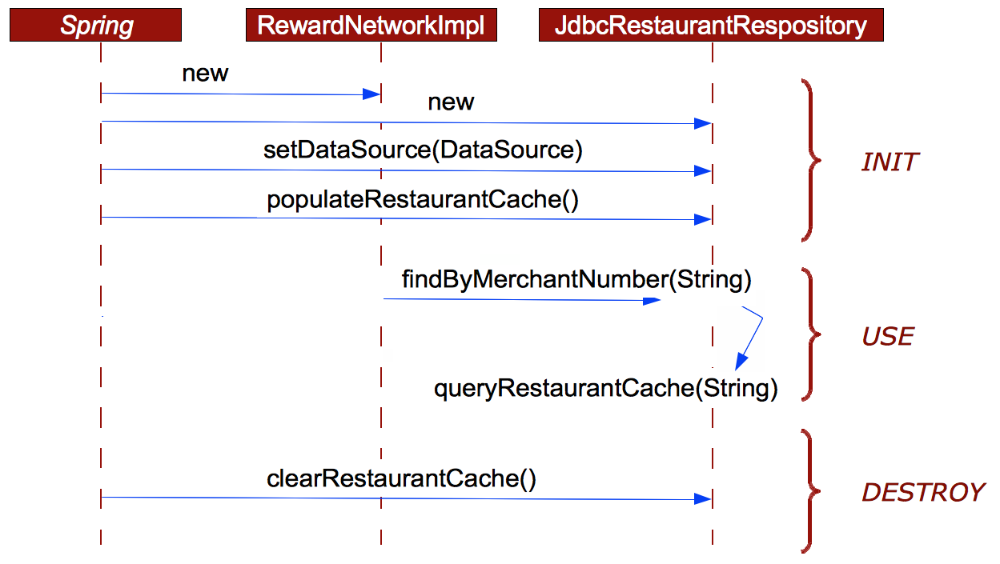

Purpose
In this lab you will gain experience using the annotation support from
Spring to configure the Rewards application.
You will use an existing setup and transform that to use annotations
such as @Autowired, @Repository and @Service to configure the
components of the application.
You will then run a top-down system test that uses JUnit.
Learning Outcomes
What you will learn:
-
How to use component scanning with annotations
-
The advantages and drawbacks of those annotations
-
How to implement your own bean lifecycle behaviors
Specific subjects you will gain experience with:
-
How to use Spring component scanning
-
Annotation-based dependency injection
You will be using the 16-annotations project.
Estimated time to complete: 45 minutes.
Use Case
In this lab, we are using a version of the Rewards application that is already fully functional.
It is the completed version of the previous lab.
It has repository implementations that are backed by JDBC, which connect to an in-memory embedded HSQLDB database. You will then rewrite some of the application code to make use of annotations.
You will also leverage Spring lifecycle methods to sequence the Rewards Restaurant repository cache creation and clearing.
The following sequence diagram will help you to perform the TODOs for implementing the bean life cycle behaviors.
Figure 1 JdbcRestaurantRepository life cycle

Quick Instructions
If you are already knowledgeable with the lesson concepts, you may consider jumping right to the code, and execute the lab in form of embedded TODO comments. Instructions on how to view them are here.
If you aren’t sure, try the TODO instructions first and refer to the lab instructions by TODO number if you need more help.
Instructions
Verify the Integration Test
TODO-01: Verify the integration test
-
The project features an integration test that verifies the system’s behavior. It’s called
RewardNetworkTestsand lives in therewardspackage. -
Run this test and verify the test runs successfully.
-
Open the application configuration class
RewardsConfig. Review the@Beansthat wires up all the dependencies. As you can see, we’re using constructor arguments.Remember that the infrastructure components (the
DataSourcefor example) are located in a separate configuration class. -
Navigate back to
RewardNetworkTestsand review thesetUp()method. It specifies theTestInfrastructureConfig.javainfrastructure configuration file.
Dependency Injection Using Annotations and @ComponentScan
You will refactor the application to use annotation based configuration.
TODO 02: Remove bean factory configuration
In the RewardsConfig class:
-
Remove the
@Beanmethods for all beans. -
Remove the
@AutowiredDataSource.
The resulting class should contain no methods and no variables.
-
Re-run the test.
-
It should fail now.
-
What just happened?
Spring has no idea how to inject the dependencies anymore, since you have removed the configuration directive. Next, we’ll start adding configuration metadata using stereotype annotations and the
@Autowiredannotation.
TODO 03: Annotate RewardNetworkImpl and wire its dependencies
-
Open the
RewardNetworkImplclass and annotate it with the@Servicestereotype. -
Why?
The
RewardNetworkImplclass is not a repository or controller, and is reflective of domain logic that could be exposed as a service. You could have just as well annotated with@Component. All stereotype annotations derive from@Component. The@Componentannotation is what Spring component scanning looks for to create Spring beans during application startup. -
Annotate the constructor with
@Autowired(constructor injection) or you can annotate the individual private fields with@Autowired(field injection)- Contructor injection is highly preferred over field injection
- In constructor injection, if there ia a single constructor,
the usage of
@Autowiredis optional
TODO 04: Annotate JdbcRewardRepository and wire its dependencies
-
Open the
JdbcRewardRepositoryclass and annotate it with the@Repositorystereotype annotation. -
Mark the
setDataSource()method with that same@Autowiredannotation. This will tell Spring to inject the setter with a instance of a bean matching theDataSourcetype.
TODO 05: Annotate JdbcAccountRepository and wire its dependencies
-
Open the
JdbcAccountRepositoryclass -
Annotate it as a
@Repository -
Annotate the
setDataSource()method with@Autowired.
TODO 06: Annotate JdbcRestaurantRepository and wire its dependencies
-
Annotate the
JdbcRestaurantRepositoryclass with@Repository. -
Use the
@Autowiredannotation on the constructor instead of a setter. -
If you take a look at the constructor you will see why, it calls a
populateRestaurantCache()method, and this method requires a reference to the DataSource in order to access the DB.
TODO 07: Set up component scanning
Although our classes are now properly annotated, we still have to tell Spring to search through our Java classes to find the annotated classes and carry out the configuration.
-
Open the
RewardsConfigclass and add the@ComponentScan("rewards.internal")annotation.This annotation turns on a feature called component scanning which looks for all classes annotated with annotations such as
@Component,@Repositoryor@Serviceand creates Spring beans from those classes. It also enables detection of the dependency injection annotations. The "rewards.internal" argument is the base package that we want Spring to look from, this will keep Spring from unnecessarily scanning allorg.* and com.*packages on the classpath. -
Re-run the test. It should pass. If it does not, check your work.
Implement Init and Destroy Callbacks
If you recall the design described in
reward dining,
restaurant data is read often but rarely changes.
You can browse JdbcRestaurantRepository and see that it has been
implemented using a simple cache.
Restaurant objects are cached to improve performance (see methods
populateRestaurantCache and clearRestaurantCache for more details).
Review the The JdbcRestaurantRepository life-cycle.
The cache works as follows:
-
When
JdbcRestaurantRepositoryis initialized it eagerly populates its cache by loading all restaurants from its DataSource. -
Each time a finder method is called, it simply queries Restaurant objects from its cache.
-
When the repository is destroyed, the cache should be cleared to release memory.
Initialize
-
Open
JdbcRestaurantRepositoryin therewards.internal.restaurantpackage. -
Notice that we are using the constructor to inject the dependency.
-
Run the test
RewardNetworkTestsand verify it passes. -
What if you had decided to use setter injection instead of constructor injection? It is interesting to understand what happens then.
TODO 08: Use Setter Injection
-
Change the dependency injection style from constructor injection to setter injection: Move the
@Autowiredfrom the constructor to thesetDataSourcemethod. -
Execute
RewardNetworkTeststo verify. -
It should fail and you should see a
NullPointerException. Why did the test fail? Investigate the stack-trace to see if you can determine the root cause.Inside
JdbcRestaurantRepository, the default constructor is now used by Spring instead of the alternate constructor. This means thepopulateRestaurantCache()is never called. Moving this method to the default constructor will not address the issue as it requires the datasource to be set first. Instead, we need to causepopulateRestaurantCache()to be executed after all initialization is complete.
TODO 09: Handle populateRestaurantCache on @PostConstruct
-
Scroll to the
populateRestaurantCachemethod and add a@PostConstructannotation to cause Spring to call this method during the initialization phase of the lifecyle. -
You may optionally remove the
populateRestaurantCache()call from the constructor if you like. -
Re-run the test now and it should pass.
It is arguable that populateRestaurantCache should never have been in the constructor, since it goes beyond constructing the object to running application code.
Using @PostConstruct is a better approach.
Destroy
Your test seems to run fine, let us now have a closer look.
TODO-10: Add print statement
-
Open
JdbcRestaurantRepositoryand add a simple print statement inclearRestaurantCacheso we can see when it is being run:System.out.println("clearRestaurantCache invoked");
TODO-11: Handle clearRestaurantCache on @PreDestroy
-
Re-run
RewardNetworkTests- check the console output. -
Notice that your
clearRestaurantCache invokedmessage was not generated soclearRestaurantCacheis not called, which means that your cache is never cleared. -
Add an annotation to mark this method to be called on shutdown.
-
Save your work and run
RewardNetworkTestsone more time. -
You should now see
clearRestaurantCache invokedoutput to the console.
Later in this course, you will learn that there is a more elegant way
to work with JUnit.
By using Spring’s Testing support, an ApplicationContext can
actually be created automatically so you do not have to do it by hand.
Summary
Your repository is being successfully integrated into your application, and Spring is correctly issuing the lifecycle callbacks to populate and clear your cache. Good job!